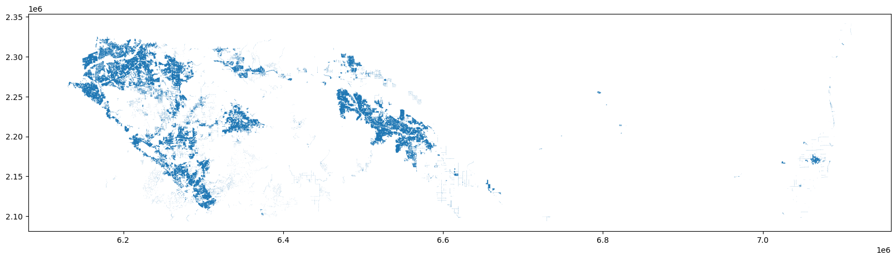
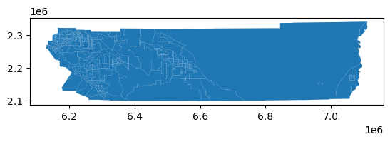
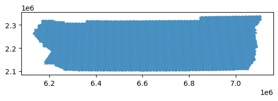
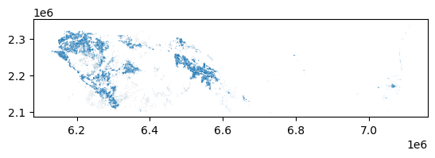
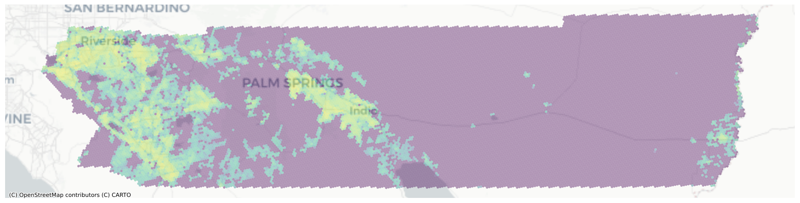

Implementing Binary Dasymetric Interpolation¶
Following an NHGIS-like Methodology¶
import contextily as ctx
import geopandas as gpd
import matplotlib.pyplot as plt
import numpy as np
import osmnx as ox
import pandas as pd
from tobler.area_weighted import area_interpolate
from tobler.dasymetric import extract_raster_features
from tobler.util import h3fy
!pip install git+https://github.com/cenpy-devs/cenpy.git -U
%load_ext watermark
%watermark -a 'eli knaap' -v -d -u -p tobler,geopandas,rasterio
Collecting git+https://github.com/cenpy-devs/cenpy.git
Cloning https://github.com/cenpy-devs/cenpy.git to /tmp/pip-req-build-a803oum7
Running command git clone --filter=blob:none --quiet https://github.com/cenpy-devs/cenpy.git /tmp/pip-req-build-a803oum7
Resolved https://github.com/cenpy-devs/cenpy.git to commit b9e57a1fa9d404be39fd0926e6d0baf015fe1317
Installing build dependencies ... ?25l-
\
done
?25h Getting requirements to build wheel ... ?25l-
done
?25h Preparing metadata (pyproject.toml) ... ?25l-
done
?25hRequirement already satisfied: pandas in /home/runner/micromamba/envs/test/lib/python3.14/site-packages (from cenpy==1.0.1) (3.0.2)
Requirement already satisfied: geopandas in /home/runner/micromamba/envs/test/lib/python3.14/site-packages (from cenpy==1.0.1) (1.1.3)
Requirement already satisfied: requests in /home/runner/micromamba/envs/test/lib/python3.14/site-packages (from cenpy==1.0.1) (2.33.1)
Collecting rtree (from cenpy==1.0.1)
Downloading rtree-1.4.1-py3-none-manylinux_2_24_x86_64.manylinux_2_28_x86_64.whl.metadata (2.1 kB)
Requirement already satisfied: numpy in /home/runner/micromamba/envs/test/lib/python3.14/site-packages (from cenpy==1.0.1) (2.4.3)
Requirement already satisfied: six in /home/runner/micromamba/envs/test/lib/python3.14/site-packages (from cenpy==1.0.1) (1.17.0)
Collecting fuzzywuzzy (from cenpy==1.0.1)
Downloading fuzzywuzzy-0.18.0-py2.py3-none-any.whl.metadata (4.9 kB)
Requirement already satisfied: libpysal in /home/runner/micromamba/envs/test/lib/python3.14/site-packages (from cenpy==1.0.1) (4.14.1)
Requirement already satisfied: packaging in /home/runner/micromamba/envs/test/lib/python3.14/site-packages (from geopandas->cenpy==1.0.1) (26.0)
Requirement already satisfied: shapely>=2.0.0 in /home/runner/micromamba/envs/test/lib/python3.14/site-packages (from geopandas->cenpy==1.0.1) (2.1.2)
Requirement already satisfied: python-dateutil>=2.8.2 in /home/runner/micromamba/envs/test/lib/python3.14/site-packages (from pandas->cenpy==1.0.1) (2.9.0.post0)
Requirement already satisfied: beautifulsoup4>=4.13.0 in /home/runner/micromamba/envs/test/lib/python3.14/site-packages (from libpysal->cenpy==1.0.1) (4.14.3)
Requirement already satisfied: jinja2 in /home/runner/micromamba/envs/test/lib/python3.14/site-packages (from libpysal->cenpy==1.0.1) (3.1.6)
Requirement already satisfied: platformdirs>=3.11.0 in /home/runner/micromamba/envs/test/lib/python3.14/site-packages (from libpysal->cenpy==1.0.1) (4.9.6)
Requirement already satisfied: scikit-learn>=1.4.0 in /home/runner/micromamba/envs/test/lib/python3.14/site-packages (from libpysal->cenpy==1.0.1) (1.8.0)
Requirement already satisfied: scipy>=1.12.0 in /home/runner/micromamba/envs/test/lib/python3.14/site-packages (from libpysal->cenpy==1.0.1) (1.17.1)
Requirement already satisfied: soupsieve>=1.6.1 in /home/runner/micromamba/envs/test/lib/python3.14/site-packages (from beautifulsoup4>=4.13.0->libpysal->cenpy==1.0.1) (2.8.3)
Requirement already satisfied: typing-extensions>=4.0.0 in /home/runner/micromamba/envs/test/lib/python3.14/site-packages (from beautifulsoup4>=4.13.0->libpysal->cenpy==1.0.1) (4.15.0)
Requirement already satisfied: charset_normalizer<4,>=2 in /home/runner/micromamba/envs/test/lib/python3.14/site-packages (from requests->cenpy==1.0.1) (3.4.7)
Requirement already satisfied: idna<4,>=2.5 in /home/runner/micromamba/envs/test/lib/python3.14/site-packages (from requests->cenpy==1.0.1) (3.11)
Requirement already satisfied: urllib3<3,>=1.26 in /home/runner/micromamba/envs/test/lib/python3.14/site-packages (from requests->cenpy==1.0.1) (2.6.3)
Requirement already satisfied: certifi>=2023.5.7 in /home/runner/micromamba/envs/test/lib/python3.14/site-packages (from requests->cenpy==1.0.1) (2026.2.25)
Requirement already satisfied: joblib>=1.3.0 in /home/runner/micromamba/envs/test/lib/python3.14/site-packages (from scikit-learn>=1.4.0->libpysal->cenpy==1.0.1) (1.5.3)
Requirement already satisfied: threadpoolctl>=3.2.0 in /home/runner/micromamba/envs/test/lib/python3.14/site-packages (from scikit-learn>=1.4.0->libpysal->cenpy==1.0.1) (3.6.0)
Requirement already satisfied: MarkupSafe>=2.0 in /home/runner/micromamba/envs/test/lib/python3.14/site-packages (from jinja2->libpysal->cenpy==1.0.1) (3.0.3)
Downloading fuzzywuzzy-0.18.0-py2.py3-none-any.whl (18 kB)
Downloading rtree-1.4.1-py3-none-manylinux_2_24_x86_64.manylinux_2_28_x86_64.whl (507 kB)
Building wheels for collected packages: cenpy
Building wheel for cenpy (pyproject.toml) ... ?25l-
done
?25h Created wheel for cenpy: filename=cenpy-1.0.1-py3-none-any.whl size=30427 sha256=1585d074632c986269e38dc6adaff42d39677cca64f0375cdb412bd819109d25
Stored in directory: /tmp/pip-ephem-wheel-cache-35g08eo9/wheels/c9/2a/4a/2656d97097aaccede1a7906ba339f0c06a867250eb39b3f0a6
Successfully built cenpy
Installing collected packages: fuzzywuzzy, rtree, cenpy
?25l
━━━━━━━━━━━━━━━━━━━━━━━━━━━━━━━━━━━━━━━━ 3/3 [cenpy]
Successfully installed cenpy-1.0.1 fuzzywuzzy-0.18.0 rtree-1.4.1
Author: eli knaap
Last updated: 2026-04-10
Python implementation: CPython
Python version : 3.14.4
IPython version : 9.12.0
tobler : 0.14.1.dev3+g422e5aae9
geopandas: 1.1.3
rasterio : 1.5.0
NHGIS uses a two step process, in which they first apply a binary dasymetric filter, then apply target density weighting. Here we will follow a similar strategy, relplicating their BD filtering (albeit with slightly different open data and replicable, open source tooling) before carrying out a simpler areal interpolation.
In NHGIS’s BD model for 2000 block data, the inhabited zone consists of all areas that are at least 5% developed impervious surface (within each 30-meter square cell of NLCD 2001 data) and lie within 300 feet of a residential road center line2 but not in a water body, using road definitions and water polygons from the 2010 TIGER/Line Shapefiles.
so we’ll start by grabbing residential streets from OSM, buffering them out 300 feet, then using that geometry to select the impervious surfaces within
rside_streets = ox.features_from_place(
"Riverside County, California", tags={"highway": "residential"}
)
rside_streets = rside_streets.to_crs(2230)
rside_streets = rside_streets.set_geometry(rside_streets.buffer(300))
rside_streets.info()
<class 'geopandas.geodataframe.GeoDataFrame'>
MultiIndex: 54941 entries, ('way', np.int64(5942156)) to ('way', np.int64(1498114233))
Columns: 206 entries, geometry to cycleway:right:segregated
dtypes: geometry(1), str(205)
memory usage: 91.4 MB
Now we use the street buffers to extract any cells between 5 and 100% impervious surface
First, download NLCD data from here: https://s3-us-west-2.amazonaws.com/mrlc/NLCD_2016_Impervious_L48_20190405.zip, then unzip the archive and pass the path to the img file to tobler’s extract_raster_features function
nlcd_path = "s3://spatial-ucr/nlcd/impervious/nlcd_impervious_2016.tif"
import rasterio
with rasterio.Env(AWS_NO_SIGN_REQUEST="YES"):
urban_rside = extract_raster_features(
rside_streets, nlcd_path, pixel_values=list(range(5, 101)), collapse_values=True
)
urban_rside.info()
<class 'geopandas.geodataframe.GeoDataFrame'>
RangeIndex: 23712 entries, 0 to 23711
Data columns (total 1 columns):
# Column Non-Null Count Dtype
--- ------ -------------- -----
0 geometry 23712 non-null geometry
dtypes: geometry(1)
memory usage: 185.4 KB
urban_rside = urban_rside.to_crs(2230)
fig, ax = plt.subplots(figsize=(20, 14))
urban_rside.plot(ax=ax)
<Axes: >

This geodataframe represents the areas that meet both criteria NHGIS suggests
Now we need some census data to transfer geometries. Lets grab tract-level population counts using cenpy
from cenpy import products
acs = products.ACS(2017)
rside_census = acs.from_county("Riverside County", variables=["B25077_001E"])
rside_census = rside_census.to_crs(2230)
rside_census.plot()
/home/runner/micromamba/envs/test/lib/python3.14/site-packages/fuzzywuzzy/fuzz.py:11: UserWarning: Using slow pure-python SequenceMatcher. Install python-Levenshtein to remove this warning
warnings.warn('Using slow pure-python SequenceMatcher. Install python-Levenshtein to remove this warning')
<Axes: >

And lets generate some synthetic zones to transfer this population data into using h3 hexagons
rside_hex = h3fy(rside_census, resolution=8)
rside_hex.plot()
<Axes: >

Ok, now all that’s left is to clip our input census data, “restricting” it to the locations NLCD defines as 5-100% impervious. To do so, we just need to clip the census data using our extracted urban features as a mask
The commented cell below takes hours and hours because geopandas current clip function is very inefficient for these data–dont uncomment it!
# rside_dasy = gpd.clip(rside_census, urban_rside)
Instead, lets define a more efficient clip operation using the spatial index
def iterclip(source, mask):
tree = mask.sindex
features = []
for i, row in source.iterrows():
query = tree.query(source.geometry.iloc[i], predicate="intersects").tolist()
submask = mask[mask.index.isin(query)]
single = gpd.GeoDataFrame(row.to_frame().T, crs=source.crs)
features.append(gpd.clip(single, submask))
frame = gpd.GeoDataFrame(pd.concat(features), crs=source.crs)
return frame
dasy = iterclip(rside_census, urban_rside)
Clipping census geometries by the urban features leaves the census attributes intact but reshapes them. If a census tract had 2000 people in it and covered 1 sqmi, but only a quarter mile of the tract was urbanized, the new geodataframe effectively shows these 2000 people occupying the quarter mile. By passing these new data to the areal_interpolate function, we’re still assuming that population density is constant across our new geometries (a condition that may not be true in reality) but that assumption is much more plausible than when using original census geometries.
dasy.plot()
<Axes: >

dasy.B25077_001E = dasy.B25077_001E.fillna(0).astype(int)
dasy.B25077_001E
0 340500
1 341400
2 165800
3 256600
4 157900
...
448 203300
449 156100
450 214700
451 322500
452 328400
Name: B25077_001E, Length: 453, dtype: int64
interp = area_interpolate(dasy, rside_hex, extensive_variables=["B25077_001E"])
interp["plot"] = interp.B25077_001E.apply(np.log1p)
fig, ax = plt.subplots(figsize=(20, 20))
interp.to_crs(3857).plot("plot", ax=ax, alpha=0.4)
ctx.add_basemap(source=ctx.providers.CartoDB.Positron, ax=ax)
ax.axis("off")
(np.float64(-13117985.779566513),
np.float64(-12720300.007852018),
np.float64(3946892.157340163),
np.float64(4044586.9064775496))

And there we have it. Riverside’s 2017 population estimated at a regular hexgrid